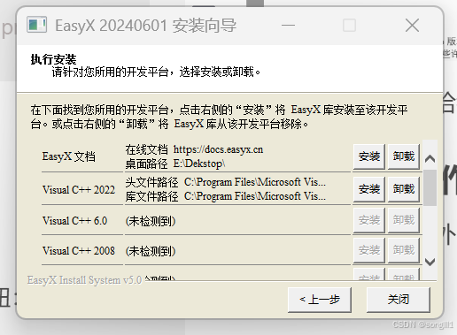
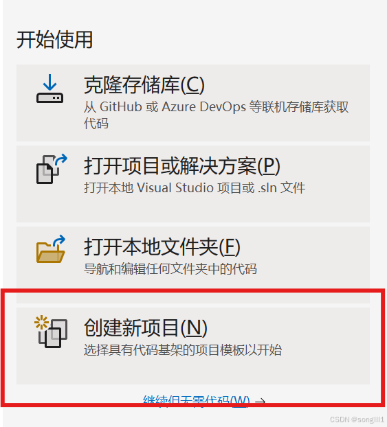
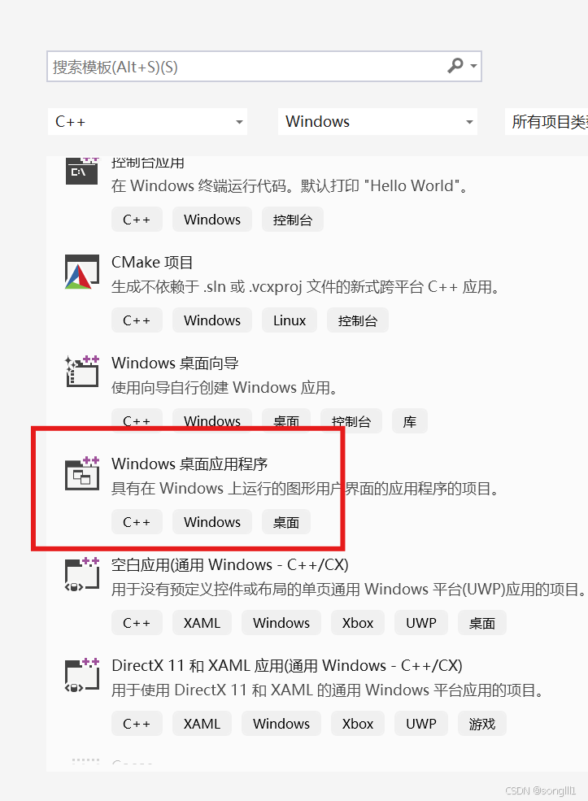
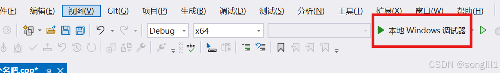

EasyX Graphics Library 是针对 Visual C++ 的免费绘图库，支持 VC6.0 ~ VC2022，简单易用，学习成本极低，应用领域广泛。
少走弯路，Visual Studio 安装EasyX最简单，此处就直接要求用 Visual Studio。
安装时记得把这个给我勾上。
打开这里，不出意外的话会看见有一个按钮：下载 EasyX。是的，点它。

点击上面第二行那个安装。
打开 Visual Studio（第一次打开可能会要求你登陆，不想登可以点跳过），点下面那个框。

选择 Windows 桌面应用程序。

给你要做的程序取个名，点击创建。
把程序除了头文件以外的内容改成这个：
#include <graphics.h> // 引用图形库头文件
#include <conio.h>
int WinMain(HINSTANCE hInstance, HINSTANCE hPrevInstance, LPSTR lpCmdLine, int nShowCmd)
{
initgraph(640, 480); // 创建绘图窗口，大小为 640x480 像素
circle(200, 200, 100); // 画圆，圆心(200, 200)，半径 100
while (1);
closegraph(); // 关闭绘图窗口
return 0;
}
点击运行。你的窗口中将会有一个圆。